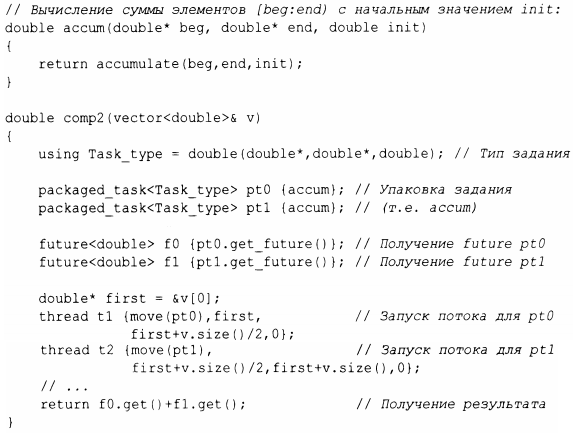

⇐15.7.1 future и promise 15.7.3 async()⇒
Как мы можем получить future в задании, которому нужен результат, и соответствующий promise в потоке, который должен этот результат вычислить? Тип packaged_task предназначен для упрощения настройки заданий, связанных с работой с future и promise в потоках. packaged_task предоставляет код-обертку для размещения возвращаемого значения или исключения из задачи в promise (подобно коду из §15.7.1). Если вы попросите об этом, вызвав get_future, packaged_task выдаст вам future, соответствующее его promise. Например, мы можем настроить два задания так, чтобы каждое суммировало половину элементов vector<double>, используя алгоритм стандартной библиотеки accumula te () (§ 14.3):
Шаблон packaged _ task принимает в качестве аргумента шаблона тип задания (здесь - Task_type, псевдоним для douЫe (double*,double*, douЫe)) и задание в качестве аргумента конструктора (в данном случае - accurn). Операция move () необходима потому, что packaged task не может быть скопирован. Причина, по которой packaged_task не может быть скопирован, заключается в том, что он является дескриптором ресурса: он владеет своим promise и (косвенно) ответственен за любые ресурсы, которыми может владеть его задание.
Обратите внимание на отсутствие явного упоминания блокировок в этом коде: мы можем сосредоточиться на заданиях, которые необходимо выполнить, а не на механизмах, используемых для управления связью между ними. Эти две задачи будут выполняться в отдельных потоках, а следовательно, потенциально параллельно.